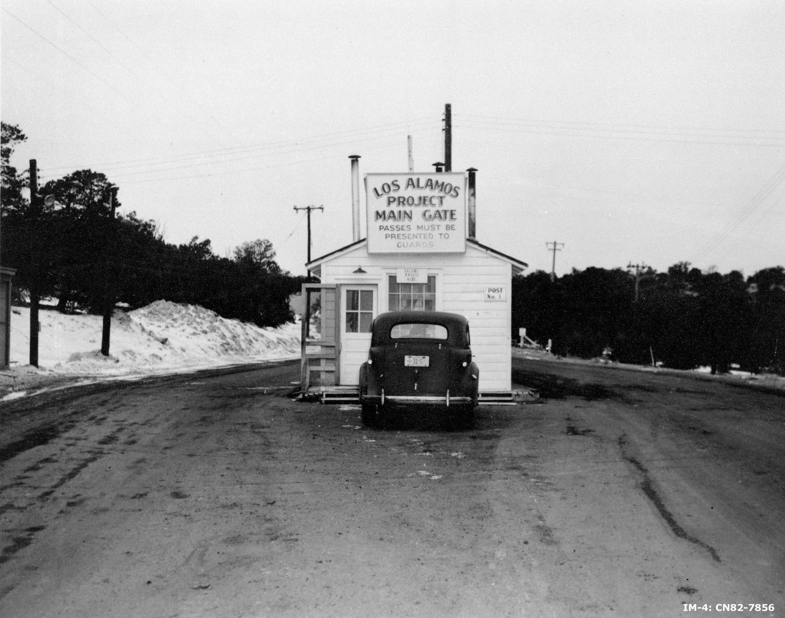
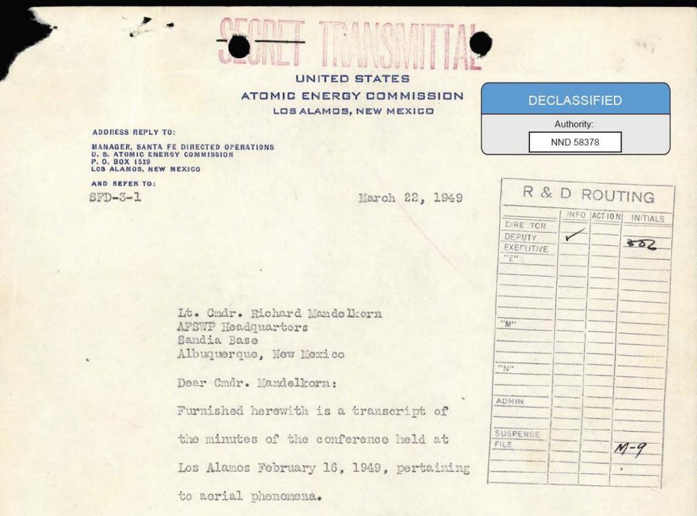
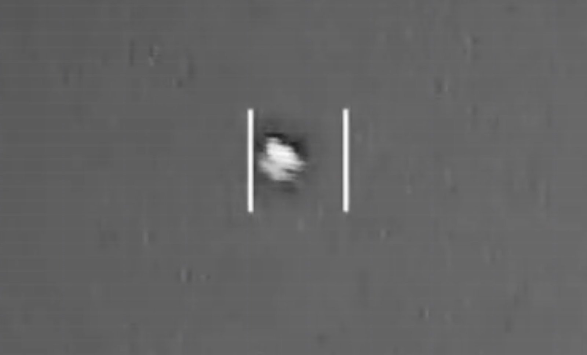
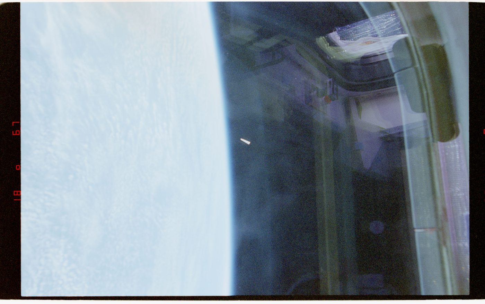

The Department of War published its fourth release of Unidentified Anomalous Phenomena files on Friday, July 10, 2026. The tranche contains 40 files, including new military videos acquired by the All-domain Anomaly Resolution Office and a set of historical documents reaching back to the late 1940s. Pentagon spokesman Sean Parnell repeated the language that has accompanied every PURSUE release so far: the collection is housed at war.gov/ufo, and additional files will follow on a rolling basis.
Most coverage of the release has focused on the new cockpit and drone videos, and we will get to those. But the document that deserves the most attention is 77 years old. It is a transcript of a conference held at Los Alamos Scientific Laboratory in 1949, where physicists who had built the atomic bomb sat in a room and tried to explain the green fireballs that kept appearing over their facility. They could not do it. The transcript records the failure in detail, and that failure is why the document matters.
This is our fourth analysis in this series. Previous entries covered the initial May 8 release, the FBI files, and NASA's Apollo-era records. As with those, the approach here is the same: what the documents actually say, the strongest mundane explanation for each item, and what remains open after both are on the table.
What Is in Release 4
The fourth tranche breaks into two categories. The historical set includes documents from the Project Sign era of the late 1940s, records connected to Project Blue Book, CIA sighting analyses from 1955, FBI correspondence, an incident report from the Pantex nuclear weapons plant in 2015, NASA photographs from the 1996 STS-80 shuttle mission, and the Los Alamos conference transcript. The modern set consists of AARO-acquired videos, most captured by multi-sensor targeting systems on fighter aircraft and unmanned platforms between 2019 and 2025.
Public interest has not slowed. When the third release went out on June 12, the Department reported that war.gov/ufo had received more than 1.7 billion hits worldwide since the site launched on May 8. Whatever one concludes about the contents, the demand for this material is not a fringe phenomenon.
The Green Fireballs: What Happened in 1948 and 1949
Beginning in late 1948, observers across northern New Mexico reported bright green objects crossing the sky at night. The reports clustered near Los Alamos and Sandia, the two most sensitive nuclear installations in the country at the time. Witnesses included security patrols, military pilots, and scientists employed at the laboratories. The objects were described as an intense green, moving on flat, nearly horizontal trajectories, appearing and disappearing without sound and without any recovered fragments on the ground.
Those characteristics are what made the reports a problem. Ordinary meteors descend at steep angles, span a range of colors, and occasionally drop recoverable material. The green fireballs, as reported, did none of those things. And they kept appearing over facilities where the United States was assembling its nuclear arsenal, three years into the Cold War, at a moment when the Air Force could not rule out Soviet reconnaissance technology.
The man assigned to investigate was Dr. Lincoln LaPaz, director of the Institute of Meteoritics at the University of New Mexico and one of the leading meteor experts in the world. LaPaz did fieldwork, interviewed witnesses, triangulated sighting reports, and searched for fragments. He found nothing on the ground, and he concluded that the trajectories and color did not match any meteor activity he had documented in a long career of doing exactly that kind of documentation.

The Conference Transcript
The transcript in Release 4, catalogued as DOE-UAP-D004, documents a conference convened at Los Alamos on February 16, 1949 to address the fireball reports. The transmittal page, sent from the Atomic Energy Commission's security operations office to Sandia Base the following month, still carries its SECRET stamp above the declassification markings. The attendees included scientists who had worked on the Manhattan Project. Edward Teller was in the room. So was LaPaz. These were not credulous men. They were people whose professional lives consisted of explaining physical phenomena, gathered specifically because the phenomenon in question was occurring over their own workplace.
According to the transcript, the group worked through the candidate explanations systematically. One hypothesis held that the objects were meteors entering the atmosphere at an unusually shallow angle and high altitude, which could account for the flat trajectories. Teller proposed that if the objects were not physical at all, some form of electron or optical phenomenon in the atmosphere might explain the sightings. LaPaz, the one man in the room with a career built on meteor observation, stated that he had never seen anything comparable in known meteor activity.
The conference reached no conclusion. That is the entire finding. A room containing some of the most capable physicists alive, with direct access to the witnesses and the sighting data, could not settle on an explanation for lights repeatedly crossing the sky above a nuclear weapons laboratory.
What followed is part of the documented record. The Air Force established an instrumented observation program called Project Twinkle in 1950, placing cameras and observers in New Mexico to capture a fireball with measurement-grade equipment. The project ran on a limited budget, never achieved the multi-station photographic capture it was designed for, and shut down in 1951 with its central question unanswered. The fireball reports thinned out, and the file went quiet for decades.
The Air Force Study That Said "Some Object Has Been Seen"
Release 4 also includes a U.S. Air Force Air Intelligence Division study titled Analysis of Flying Object Incidents in the United States, produced during the same early Cold War window. Los Angeles magazine, which reviewed the release on July 11, highlighted the study's core conclusion: military analysts determined that "some object has been seen" while acknowledging they could not establish what the objects were. The study treated the most reasonable explanations as either advanced domestic technology or foreign aircraft, and noted that if the sightings traced to the Soviet Union, they represented a national security concern.
Read alongside the Los Alamos transcript, the study shows how the government of that era actually processed anomaly reports. The analysts did not dismiss the witnesses. They confirmed that observations were real, exhausted the conventional candidates, flagged the security implications, and left the identification question open. That is a more rigorous posture than the popular memory of the period suggests, and it compares favorably with how the same institutions handle the modern reports in this very release.
The Protocol Born From the Same Files
The government that could not explain the green fireballs later funded a program at SRI and Fort Meade to train structured perception under controlled conditions. Those remote viewing protocols are documented, declassified, and trainable today.
Start Training →The New Videos: Mostly Ambiguous, Some Clearly Balloons
The modern material in Release 4 deserves the same treatment the historical files get, which means acknowledging up front that most of it is unimpressive. The Debrief's Micah Hanks, reviewing the release on July 10, noted that the new videos largely show small, blurry objects captured by electro-optical targeting systems, and that nothing released through PURSUE so far provides a clear example of an object exhibiting unusual or advanced technology.
Some entries resolve themselves. The video catalogued as DOW-UAP-PR116, recorded over the Atlantic in 2020, comes with the observer's own description: a maroonish object roughly 12 to 15 feet tall, traveling with the wind, never maneuvering or changing direction, resembling a large deformed balloon. The flight dynamics in the footage match that assessment. Other videos in recent releases show dangling payloads beneath what are plainly balloons. Including this material in a UAP release is arguably a point in the program's favor. Unresolved does not mean exotic, and publishing the mundane cases alongside the strange ones is what an honest catalog looks like.
Other entries are harder to file away. DOW-UAP-PR112, from the Eastern United States in 2019, includes the observer's statement that the object showed flight characteristics unlike anything he had seen in 28 years of service with the U.S. Air Force and U.S. Navy. DOW-UAP-PR108, recorded over the Western United States in 2020, shows an object with a visual resemblance to the well-known 2004 Tic Tac footage, though resemblance in low-resolution infrared imagery is weak evidence of anything. In both cases the honest summary is the same one the 1949 analysts wrote: some object has been seen, and the data released does not establish what it was.

A Chain of Custody Problem, Documented by AARO Itself
One item in Release 4 raises an issue that will matter for every future tranche. An infrared video catalogued as DOW-UAP-PR113, captured by a military platform in 1996, was digitally altered before it ever reached the government's former UAP Task Force. That is AARO's own characterization. The office notes that only a few seconds of the nearly three-minute file show the actual area of contrast crossing the sensor, while the remainder repeats portions of the recording at different speeds before ending on a frozen frame.
We flagged a version of this problem in our analysis of the first release: the government's UAP archive contains records the government itself manipulated, whether for disinformation purposes in the 1950s or for unknown reasons in files like this one. AARO disclosing the alteration is the right move. But it means researchers cannot treat PURSUE files as clean primary sources by default. Each record carries its own custody history, and for some of them that history includes editing by hands unknown.
STS-80: Three Photographs From Orbit
The NASA contribution to Release 4 is a series of three photographs taken by astronauts aboard Space Shuttle Columbia during the STS-80 mission, between November 19 and December 7, 1996. The images show a small object, triangular or cone shaped, in low Earth orbit near the limb of the planet. STS-80 has a long history in UAP literature because of luminous shapes recorded by the shuttle's cameras during the same mission.
The standard explanation, and it is a good one, is ice.

Spacecraft shed particles of outgassed water that catch sunlight against a dark background, and in low-light conditions a nearby flake of ice can photograph as a structured, luminous object. Spacecraft shed particles of outgassed water that catch sunlight against a dark background, and in low-light conditions a nearby flake of ice can photograph as a structured, luminous object. Anyone evaluating the STS-80 images should start from that hypothesis and ask whether the released frames contain anything it fails to explain. On the evidence published so far, the ice explanation has not been ruled out, and NASA has made no claim that it should be.
The Pattern Worth Taking Seriously
Set the individual cases aside and look at the geography. The green fireballs clustered over Los Alamos and Sandia. Release 4 includes a 2015 incident report from Pantex, the plant where the United States assembles and disassembles nuclear weapons. Earlier releases included records from military nuclear facilities and strategic sites. The association between anomaly reports and nuclear infrastructure runs through eight decades of these files, and it admits at least two readings.
The mundane reading: nuclear sites are the most heavily guarded, most heavily instrumented, most anxiously watched places in the country. More sensors and more vigilant observers produce more reports of everything, including ambiguous lights. The anomalous reading: something repeatedly surveils the places where nuclear weapons are built and stored. The documents in PURSUE do not decide between these readings. But the 1949 conference transcript shows that the men who built the weapons took the second possibility seriously enough to convene about it, and the 2015 Pantex report shows the reporting pattern did not end with the Cold War.
For readers of this journal, there is a familiar shape here. When the government later investigated anomalous cognition under Project STARGATE, the same institutional reflex appeared: unexplained reports near sensitive facilities, quiet internal programs, decades of classification, and eventual partial disclosure. The Cold War psychic programs and the fireball investigations were run by the same government, in the same era, under the same security logic. PURSUE is now declassifying one half of that story on a rolling basis. The other half arrived in the STARGATE archive years ago.
What to Watch Next
Parnell's statement confirms a fifth release is in preparation. Three things are worth tracking when it lands. First, whether the historical documents continue to move forward in time, out of the Project Sign and Blue Book era and into the decades where records remain thin. Second, whether AARO continues to disclose custody problems like the altered 1996 video, which is the single best indicator of the program's seriousness. Third, whether any release includes the instrumented sensor data, radar tracks, and calibration records that would let independent analysts do real work, rather than the compressed video excerpts published so far.
The green fireball file sat unresolved for 77 years, and its inclusion in Release 4 does not resolve it now. What the transcript establishes is narrower and more durable: the inability to explain these reports is not a modern failure of rigor. It reaches back to a room at Los Alamos in 1949, where the men who understood the atom conceded that they did not understand the lights above their laboratory. The record of that concession is now public, and it reads exactly as strange as it always was.
Share this analysis

The protocols exist. They are trainable.
The same era that produced the green fireball file produced Project STARGATE, where military remote viewers trained under documented, structured protocols. Those protocols survive, and Psionic Training is built on them.
Begin Training →PURSUE File Alerts
Get notified when new PURSUE tranches drop, plus our analysis of each release. No noise.